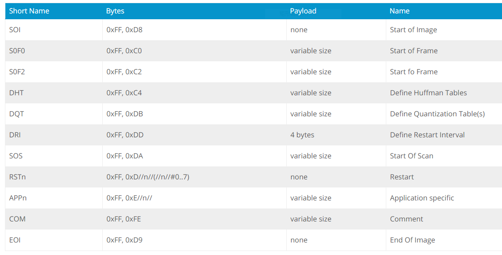
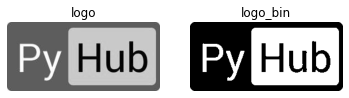
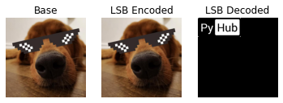
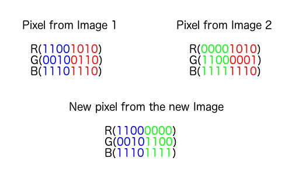
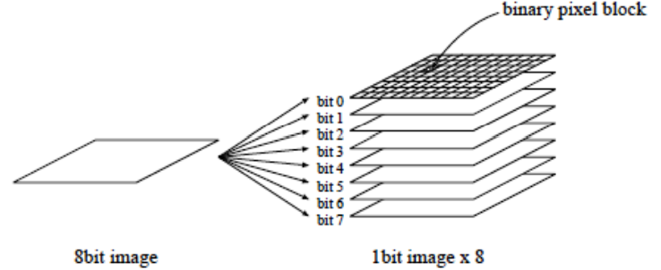
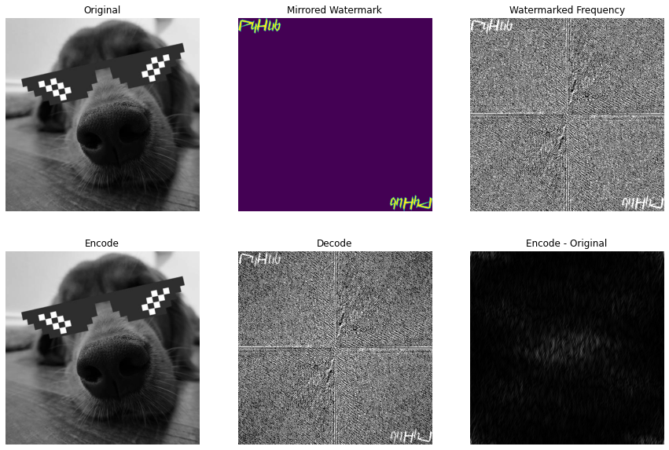
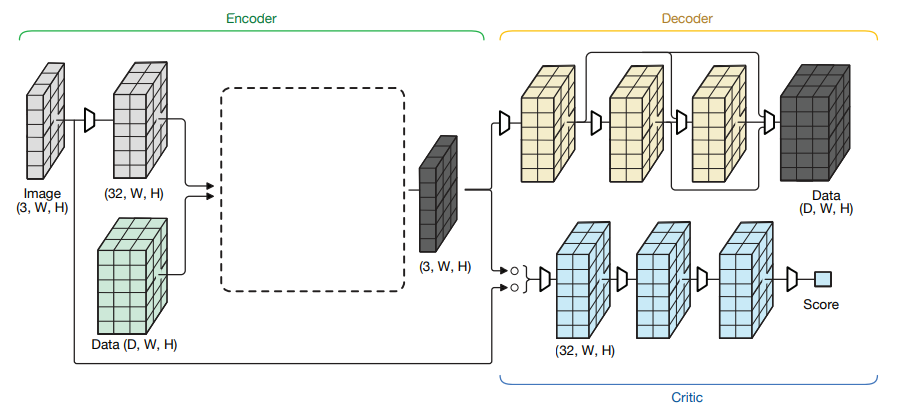
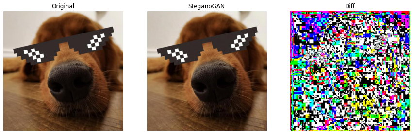

图像隐写术
隐写术是一种将保密信息隐藏在公开信息中的技术，利用图像文件的特性，我们可以把一些想要刻意隐藏的信息或者证明身份、版权的信息隐藏在图像文件中。比如早期流行的将一些下载链接、种子文件隐藏在图片文件中进行传播，再比如某互联网公司内部论坛“月饼事件”中通过员工截图精准定位个人信息的技术，都可以归为图像隐写技术（Image Steganography）。本文主要介绍一些常见的图像隐写技术及 Python 实现方法。
元数据修改¶
图像是由像素组成的，但图像文件除了保存像素信息之外，还需要存储一些额外的描述信息。以常见的 JPEG 图像为例，文件格式规定了一些特定的字符用以标志特定的元数据起点位，如下图所示：

其中常用于存储拍摄设备信息的 EXIF 标记即存储在 APPn 标记位。以二进制格式读取一张 JPEG 图像，可以看到文件的起始（SOI）、终止（EOI）符号：
with open("input.jpg", "rb") as f:
f_bytes = f.read()
print( f_bytes[:2] )
print( f_bytes[-2:] )
# OUTPUT
"""
b'\xff\xd8'
b'\xff\xd9'
"""
通过二进制格式，可以直接在图像文件后面追加信息：
txt = '你好 PyHub!'
# 编码
with open("out_append.jpg", "wb") as f:
with open("input.jpg", "rb") as ff:
f.write(f_bytes[sos:])
f.write('你好 PyHub!'.encode())
# 解码
with open("out_append.jpg", "rb") as f:
content = f.read()
eoi = content.find(b'\xff\xd9')
print(content[eoi+2:].decode())
# OUTPUT
"""
你好 PyHub!
"""
元数据修改的方法可以做到不损失任何图像质量，但同时也最容易被攻击，现在大部分图像上传应用会对图像内容进行清洗，去除不必要的元数据以保护用户隐私。
比特操作¶
第二种方法则是针对具体的图像数据进行修改，其原理就是利用图像本身丰富的信息量，在进行少量修改（篡改）的情况下，不会影响整体视觉效果。最常见的方法是**最低有效位（Least Significant Bit, LSB）**，这种方法有很多变种，但其核心思想就是利用最低位对像素值影响不大，篡改后中像素视觉效果影响也不大。
比如我们可以将一张简单的水印图片进行二值化，得到一张只有 0/1 表示的图片：
from PIL import Image
import numpy as np
from matplotlib import pyplot as plt
logo = Image.open("logo.jpg").convert("L")
logo_bin = np.where( np.array(logo) > 128, 1, 0).astype(np.uint8)

base = Image.open("input.jpg")
# 最低位变为 0
base_lsb = np.bitwise_and(base, 0xFE)
# 将 logo 拼接到最低位(其中一个通道，也可以保留3个通道)
logo_h, logo_w = logo_bin.shape
base_lsb[:logo_h, :logo_w, 0] += logo_bin
# 解码
base_decode = np.bitwise_and(base_lsb[:,:,0], 1)

上面的例子仅仅只是占用了原图单通道最低位 1bit 的信息，也可以原图和隐藏图片各占一半，原理是一样的。

对图像数据进行比特操作的方法有很多，比如可以通过修改最低位的奇偶值，直接存储二进制编码（https://www.geeksforgeeks.org/image-based-steganography-using-python/）；或者按比特位对图像进行重新分割，等等。

很显然，通过操作图像数据进行隐写会在一定程度上修改图像的视觉质量，而且对于内容本身不够丰富的图像（例如大面积纯色背景），这种方法就很容易露出马脚。
频域水印¶
除了对像素（空间域）进行操作外，还可以在频率域进行操作，其原理就是进行傅里叶变换后，对频率域的数据加水印：
# 原图，1-1
base = Image.open("input.jpg").convert("L")
base_fft = np.fft.fft2(np.array(base))
base_ffs = np.fft.fftshift(base_fft)
# 绘制水印
fnt = ImageFont.truetype("Cyberway Riders.otf", 40)
wm = Image.new("L", base.size, (0))
ImageDraw.Draw(wm).text((0,0), "PyHub", font=fnt, fill=(255))
wm_arr = np.array(wm)
# 反转生成中心对称，图1-2
fft_wm_arr = (np.flip(wm_arr) + wm_arr).astype(np.uint8)
# 叠加水印，图1-3
base_ffs.real[fft_wm_arr == 255] = 255
# 傅里叶逆变换，图2-1
base_reversed = np.real( np.fft.ifft2( np.fft.ifftshift(base_ffs) ) )
# 对逆变换（编码）后的图进行解码，图2-2
base_decode = np.clip(np.fft.fftshift( np.fft.fft2(base_reversed)).real, 0, 255)
# 编码后的图与原图的差异，图2-2
base_reversed - np.array(base)

以上的方法比较简单粗暴，直接对频域的特定区域叠加了水印，实际效果可能会对原始图片造成较大损害，更准确的方法应该是对水印图片进行编码，让水印图像均匀地分布在各个频率，具体可以参考：https://github.com/guofei9987/blind_watermark/。对频域进行修改的方法对图像视觉效果影响更小，在面对各种图像改写攻击时的还原效果更好。
深度学习¶
一切皆可深度学习。
通过 PapersWithCode 网站可以看到一些尝试用深度学习的方法进行图像隐写的研究，例如这篇采用对抗生成网络（GAN）模型，将数据Data 编码到Image中：

可以通过 pip install steganogan 安装作者预训练的模型：
steganogan encode input.jpg "Hi PyHub" -o out_gan.jpg
效果如下：
